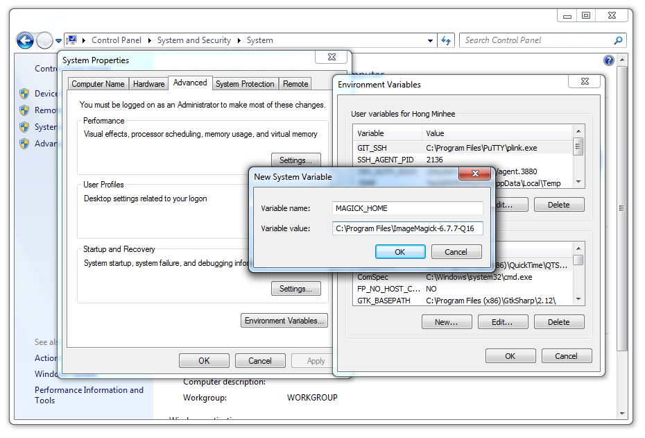

Wand itself can be installed from PyPI using easy_install or pip:
$ easy_install Wand # or
$ pip install Wand
Wand is a Python binding of ImageMagick, so you have to install it as well:
Or you can simply install Wand and its entire dependencies using the package manager of your system (it’s way convenient but the version might be outdated):
If you’re using Linux distributions based on Debian like Ubuntu, it can be easily installed using APT:
$ sudo apt-get install libmagickwand-dev
If you need SVG, WMF, OpenEXR, DjVu, and Graphviz support you have to install libmagickcore5-extra as well:
$ sudo apt-get install libmagickcore5-extra
If you’re using Linux distributions based on Redhat like Fedora or CentOS, it can be installed using Yum:
$ yum update
$ yum install ImageMagick-devel
You need one of Homebrew or MacPorts to install ImageMagick.
$ brew install imagemagick
If seam carving (Image.liquid_rescale()) is needed you have install liblqr as well:
$ brew install imagemagick --with-liblqr
$ sudo port install imagemagick
If your Python in not installed using MacPorts, you have to export MAGICK_HOME path as well. Because Python that is not installed using MacPorts doesn’t look up /opt/local, the default path prefix of MacPorts packages.
$ export MAGICK_HOME=/opt/local
You could build ImageMagick by yourself, but it requires a build tool chain like Visual Studio to compile it. The easiest way is simply downloading a prebuilt binary of ImageMagick for your architecture (win32 or win64).
You can download it from the following link:
http://www.imagemagick.org/download/binaries/
Choose a binary for your architecture:
Note that you have to check Install development headers and libraries for C and C++ to make Wand able to link to it.
Lastly you have to set MAGICK_HOME environment variable to the path of ImageMagick (e.g. C:\Program Files\ImageMagick-6.7.7-Q16). You can set it in Computer ‣ Properties ‣ Advanced system settings ‣ Advanced ‣ Environment Variables....
Wand itself is already packaged in Debian/Ubuntu APT repository: python-wand. You can install it using apt-get command:
$ sudo apt-get install python-wand
{kind=link}